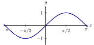
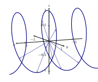

We introduce the idea of a vector at every point in space.
Types of functions
When we started on our journey exploring calculus, we investigated functions .
Typically, we interpret these functions as being curves in the -plane:

We’ve also studied vector-valued functions . We can interpret these functions as
parametric curves in space: 
We’ve also studied functions of several variables . We can interpret these functions as
surfaces in . For example if , then plots a surface in :
Now we are ready for a new type of function.
Vector fields
Now we will study vector-valued functions of several variables: We interpret these
functions as vector fields, meaning for each point in the -plane we have a vector.
To some extent functions like this have been around us for a while, for if then is a
vector-field. Let’s be explicit and write a definition. A
vector field in is a
function where for every point in the domain, we assign a vector to the
range.
Consider the following table describing a vector field :
What is ?
Consider the following picture:
Which vector field is illustrated by this picture?
Note that with the first choice, the lengths of the vectors is changing, and that does
not appear to be the case with our vector field.
The second choice is not a vector field.
The third choice is not a vector field.
The fourth choice is a constant vector field, and is the correct answer.
Properties of vector fields
As we will see in the chapters to come, there are two important qualities of vector
fields that we are usually on the look-out for. The first is rotation and the second is
expansion. In the sections to come, we will make precise what we mean by rotation
and expansion. In this section we simply seek to make you aware that these are the
fundamental properties of vector fields.
Radial fields
Very loosely speaking a radial field is one where the vectors are all pointing toward a
spot, or away from a spot. Let’s see some examples of radial vector fields.
Here we see
.
Those vectors are all pointing away from the central point!
Here we see .
Those vectors are all pointing toward the central point.
Here we see .
This is a three-dimensional vector field where all the vectors are pointing away from
the central point.
Each of the vector fields above is a radial vector field. Let’s give an explicit
definition.
A
radial vector field is a field of the form where where is a real number.
Fun fact: Newton’s law of gravitation defines a radial vector field.
Is a radial vector field?
yes no
Absolutely! This vector field can be rewritten as: where .
Some fields look like they are expanding and are. Other fields look like the are
expanding but they aren’t. In the sections to come, we’re going to use calculus to
precisely define what we mean by a field “expanding.” This property will be called
divergence.
Rotational fields
Vector fields can easily exhibit what looks like “rotation” to the human eye. Let’s
show you a few examples.
Here we see .
This vector field looks like it has counterclockwise rotation.
Here we see
This vector field looks like it has clockwise rotation.
At this point, we’re going to give some “spoilers.” It turns out that from a local
perspective, meaning looking at points very very close to each other, only the first
example exhibits “rotation.” While the second example looks like it is “rotating,” as
we will see, it does not exhibit “local rotation.” Moreover, in future sections we will
see that rotation (even local rotation) in three-dimensional space must always happen
around some “axis” like this:
In the sections to come, we will use calculus to precisely explain what we mean by
“local rotation.” This property will be called curl.
Gradient fields
In this final section, we will talk about fields that arise as the gradient of some
differentiable function. As we will see in future sections, these are some of the nicest
vector fields to work with mathematically.
Consider any differentiable function . A
gradient field is a vector field where Note,
since we are assuming is differentiable, we are also assuming that is defined for all
points in .
Let’s take a look at a gradient field.
Consider . A plot of this function looks like this:
The gradient field of looks like this:
Note we can see the vector pointing in the initial direction of greatest increase. Let’s
see a plot of both together:
Remind me, what direction do gradient vectors point?
Gradient vectors point to
the maximum. Gradient vectors point up. Gradient vectors point in the initial
direction of greatest increase.
Now consider . A plot of this function looks like this:
The gradient field of looks like this:
Note we can see the vector pointing in the initial direction of greatest increase. Let’s
see a plot of both together:
The shape of things to come
Now we present the beginning of a big idea. By the end of this course, we hope to
give you a glimpse of “what’s out there.” For this we’re going to need some notation.
Think of and as sets of numbers, like or or or .
- is the set of continuous functions from to .
- is the set of differentiable functions from to whose first-derivative is
continuous.
- is the set of differentiable functions from to whose first and second
derivatives are continuous.
- is the set of differentiable function from to where the first th derivatives
are continuous.
- is the set of differentiable functions from to where all of the derivatives
are continuous.
Here is a deep idea:
The gradient turns functions of several variables into vector
fields.
We can write this with our new notation as:
The Clairaut gradient test
Now we give a method to determine if a field is a gradient field.
Clairaut A vector field , where and have continuous partial derivatives, is a gradient
field if and only if for all and .
Let’s take a second and think about the gradient as a
function on functions. Let be the set of all function from to whose th-derivatives
are continuous for all values of . The gradient takes functions of several variables and
maps them to vector fields:
So if and only if there is some function where but if all the partial derivatives are
continuous, then: This is true if and only if .
If , then is called a
potential function for .
Is a gradient field? If so find a potential function.
To start, let’s do Clairaut’s
gradient test:
And so
And so we see , and thus is a gradient field. Now let’s try to find a potential function. To
do this, we’ll antidifferentiate—in essence we want to “undo” the gradient. Write with me:
where is a function of . In a similar way:
We need to make this happen, we set and . From this we find our potential function
is .
Now try your hand at these questions:
Is a gradient field? If so find a potential function.
yes no
Is a gradient field? If so find a potential function.
yes no
Find a potential function such that .
Is a gradient field? If so find a potential function.
yes no
Find a potential function such that .
Is a gradient field? If so find a potential function.
yes no
What happens at ?